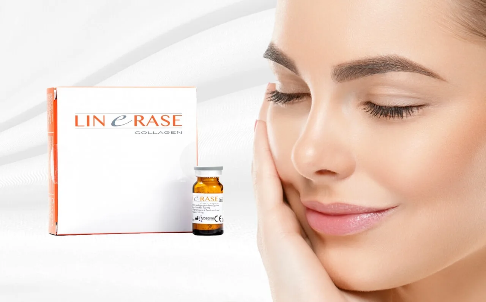

Feeling like your skin has lost its glow? You’re not alone. Dull skin is a common concern for many of us, often brought on by factors such as stress, lack of sleep, or simply the passage of time. When your skin appears lacklustre, it can impact your confidence and how you feel about your overall appearance.
This is where the concept of skin vitality comes into play. Skin vitality refers to the radiance and health of your skin, which can significantly affect your look and mood. Healthy, vibrant skin not only enhances your beauty but also serves as a reflection of your overall well-being. Investing in your skin’s vitality is an essential part of any self-care routine.
If you’re seeking ways to restore that youthful glow, Linerase Collagen may just be the solution you need. In this article, we’ll explore effective strategies for boosting your skin’s vitality, featuring Linerase as a solution in your journey to radiant skin.
Understanding Dull Skin

Understanding Dull Skin: Learn how stress, sleep, and environmental factors contribute to a lackluster complexion and ways to revive your skin’s vitality.
What Causes Dull Skin?
Dull skin can be a frustrating issue, leaving you feeling less confident about your appearance. Understanding the underlying causes can help you take proactive steps towards revitalising your complexion. Here are some of the main factors that contribute to dull skin:
- Ageing: As we age, our skin naturally produces less collagen and elastin, two essential proteins that maintain the skin’s firmness and elasticity. This reduction can lead to a lack of radiance and a more uneven texture, making the skin appear dull.
- Environmental Stressors: Pollution, UV radiation, and harsh weather conditions can take a toll on your skin. These external factors can lead to oxidative stress, resulting in damage to skin cells and a decline in overall skin health. Over time, this can contribute to a dull and lifeless complexion.
- Lifestyle Habits: Your daily choices significantly impact your skin’s vitality. Poor diet, lack of hydration, inadequate sleep, and high-stress levels can all lead to a lacklustre appearance. For instance, a diet low in essential nutrients may deprive your skin of the vitamins and minerals it needs to glow. Similarly, not drinking enough water can leave your skin looking dry and tired.
Signs of Dull Skin
Identifying dull skin is the first step towards restoring its vitality. Here are some common signs to look out for:
- Lack of Radiance: One of the most apparent signs of dull skin is a noticeable lack of glow. If your complexion appears flat or lifeless, it may be time to evaluate your skincare routine and lifestyle choices.
- Uneven Texture: Dull skin often feels rough to the touch, with visible dryness and flakiness. This uneven texture can make your skin appear less youthful and vibrant.
- Pore Visibility: When skin lacks vitality, pores can become more pronounced, making the skin look uneven and less smooth.
- Fatigue in Appearance: Dull skin can also contribute to an overall tired look. If your skin appears lacklustre, it may lead to the impression of fatigue, even if you feel well-rested.
The Importance of Skin Vitality
Embrace your skin’s natural vitality! Clear, radiant skin not only boosts confidence but also reflects overall health and wellness.
What Is Skin Vitality?
Skin vitality refers to the overall health and radiance of your skin. In simple terms, it’s all about how vibrant, fresh, and youthful your skin looks and feels. Healthy skin is characterised by an even tone, smooth texture, and a natural glow. It’s not just about aesthetics; skin vitality reflects your body’s internal health and wellbeing. When your skin is vital, it can better protect you from environmental stressors, retain moisture, and heal more effectively.
Benefits of Healthy, Vibrant Skin
Having vibrant, healthy skin goes beyond just looking good; it plays a significant role in how you feel about yourself. Here are some key benefits of maintaining skin vitality:
- Boosts Confidence: When your skin looks its best, you’re likely to feel more confident in your appearance. This newfound confidence can positively impact various aspects of your life, from social interactions to professional engagements.
- Enhances Your Appearance: Radiant skin not only gives you a youthful glow but also helps to create a more polished and put-together look. Whether you prefer a natural makeup look or a more glamorous style, healthy skin provides the perfect canvas.
- Supports Overall Wellbeing: Healthy skin can significantly influence your overall wellbeing. It can enhance your mood, promote positive self-esteem, and even improve your mental health. When you take care of your skin, you’re also investing in your health, leading to a happier and more fulfilling life.
Tips for Boosting Skin Vitality
1. Hydration is Key
Staying properly hydrated is essential for maintaining skin vitality. Drinking enough water helps to flush out toxins, keeping your skin looking fresh and plump.
Aim for at least eight glasses a day, but remember that your needs may vary depending on your activity level and climate.
In addition to drinking water, incorporating hydrating products into your skincare routine can significantly enhance your skin’s moisture levels. Look for serums and moisturisers containing hyaluronic acid or glycerin, which draw moisture into the skin, helping to combat dullness and dryness.
2. A Balanced Diet
What you eat plays a vital role in your skin’s health. A balanced diet rich in vitamins and antioxidants can help rejuvenate your skin from the inside out. Foods like berries, leafy greens, nuts, and fish are excellent choices. For instance, vitamin C found in oranges and strawberries is known for its skin-brightening properties, while omega-3 fatty acids in salmon can help maintain skin elasticity.
By prioritising a nutrient-dense diet, you’re giving your skin the fuel it needs to shine.
3. Consistent Skincare Routine
Establishing a consistent skincare routine is crucial for promoting skin vitality. Start with cleansing your face to remove dirt and impurities, which allows your skin to breathe and absorb products better. Follow up with gentle exfoliation a few times a week to slough away dead skin cells, revealing a brighter complexion underneath.
Finally, don’t forget to moisturise daily to lock in hydration and maintain your skin’s barrier. A simple routine can make a significant difference over time, helping your skin look its best.
4. Regular Exercise
Incorporating regular exercise into your lifestyle not only benefits your overall health but also enhances your skin’s vitality. Physical activity promotes blood circulation, which helps deliver oxygen and nutrients to your skin cells. This increased blood flow can lead to a healthy glow, making your skin appear more vibrant.
Plus, sweating during workouts can help clear out pores, reducing the chances of breakouts. Aim for at least 30 minutes of moderate exercise most days of the week for optimal results.
5. The Role of Professional Treatments
While daily habits are essential for maintaining skin vitality, sometimes you need an extra boost. That’s where professional treatments come in, and Linerase is an excellent option for revitalising dull skin. This treatment stimulates collagen production, helping to restore your skin’s natural radiance.
By working with a qualified skincare professional, you can tailor a treatment plan that fits your individual needs and goals. Whether you’re dealing with fine lines or uneven texture, Linerase can be a game-changer in your journey toward glowing skin.
Spotlight on Linerase Collagen

Reveal your skin’s natural radiance with Linerase Collagen – the ultimate boost for vibrant, youthful-looking skin.
What is Linerase?
Linerase is an injectable treatment designed to restore skin vitality and combat the visible signs of ageing.
It contains a unique formulation of atelocollagen, which is derived from natural sources and is known for its purity and safety. This advanced collagen product promotes skin rejuvenation by enhancing hydration, elasticity, and overall skin texture, making it an excellent choice for those seeking a more youthful and radiant complexion.
How Does Linerase Work?
Linerase works by harnessing the power of collagen to stimulate the body’s natural healing processes. When injected into the skin, the atelocollagen acts as a scaffold, promoting the proliferation of fibroblasts and increasing the synthesis of collagen and elastin. This mechanism not only revitalises the skin’s structure but also boosts moisture retention, leading to improved firmness and a reduction in fine lines and wrinkles.
Essentially, Linerase helps rejuvenate the skin from within, restoring its natural resilience and vitality.
Benefits of Using Linerase
The benefits of using Linerase are impressive and multifaceted. Many users report:
- Improved Skin Texture: Linerase helps smooth out rough skin and diminish the appearance of pores, resulting in a more even surface.
- Enhanced Hydration: By promoting deeper hydration within the skin, Linerase provides a plump, youthful appearance that radiates health.
- Increased Elasticity: The stimulation of collagen and elastin production leads to firmer skin, helping to counteract sagging and loss of volume.
- Natural Glow: With revitalised skin, you can expect a healthy, luminous glow that reflects light beautifully.
These benefits can help you feel more confident in your skin, allowing you to embrace a vibrant, youthful look.
What to Expect from Treatment
Receiving Linerase treatment is a quick and straightforward process. Initially, a consultation will take place to assess your skin and discuss your aesthetic goals. The treatment involves a series of precise micro-injections administered into the areas of concern. Each session typically lasts around 30 to 45 minutes, making it convenient for those with busy schedules.
One of the great advantages of Linerase is that it requires minimal downtime. After the procedure, you may experience mild redness or swelling at the injection sites, but these effects usually subside within a few hours. Most individuals can resume their daily activities immediately after treatment.
Results can often be noticed within a few days, with optimal improvements appearing over a few weeks as collagen production increases. To maintain the best results, a series of treatments may be recommended, along with periodic follow-ups.
If you’re curious about how to incorporate Linerase into your routine or want personalised advice tailored to your skin’s needs, we encourage you to consult with Dr Abby at Dr Abby Clinic!
Dr Abby can provide insights and recommendations to help you achieve the vibrant skin you deserve. Your journey to revitalised skin starts with informed choices—take the first step today!